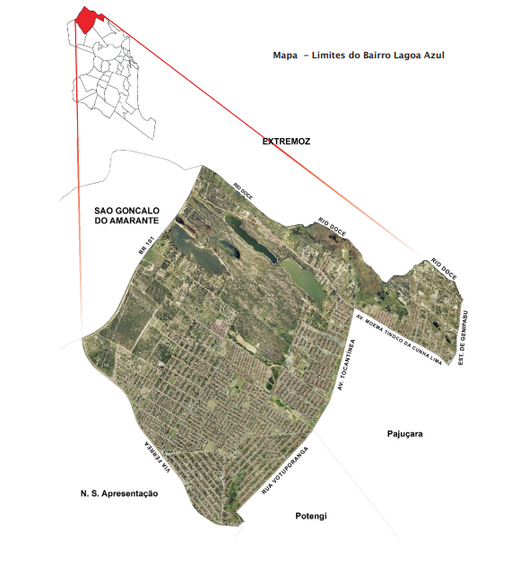

Lagoa Azul é um bairro situado na zona norte de Natal, capital do Rio Grande do Norte. Sua formação teve
início em 1983, com os loteamentos Gramoré e Nova Natal, durante um período de expressivo crescimento
urbano e populacional na cidade.
Em menos de uma década, a população local atingiu 33 mil habitantes, conforme o censo de 1991.
Posteriormente, em 5 de abril de 1993, a lei municipal nº 4.018 oficializou Lagoa Azul como bairro,
nomeado em referência a uma das lagoas presentes na área.
Durante os anos 1990, o bairro continuou a crescer, alcançando 40 mil moradores em 1996 e ultrapassando
50 mil em 2000. No censo mais recente, Lagoa Azul foi identificado como o segundo bairro mais populoso
de Natal, ficando atrás apenas de Nossa Senhora da Apresentação, com o qual faz divisa a oeste,
separando-se pela linha férrea do Sistema de Trens Urbanos de Natal.
Parte do território de Lagoa Azul está inserida na Zona de Proteção Ambiental 9 (ZPA-09), conforme o
plano diretor de Natal, abrangendo lagoas e dunas próximas ao Rio Doce, que delimita o bairro ao norte,
fazendo fronteira com o município de Extremoz.
